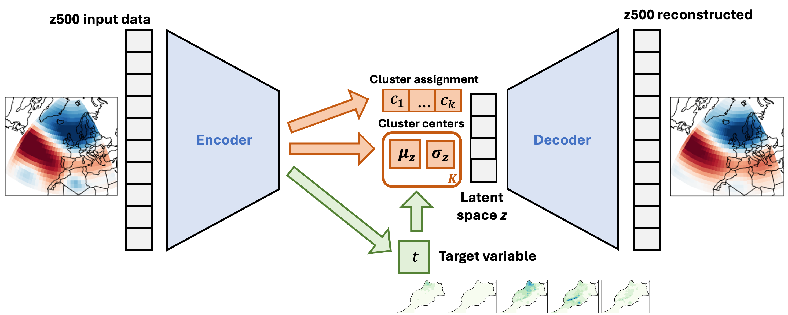

Machine Learning and Artificial Intelligence for Climate Science

Machine learning is the science enabling computational systems to learn how to perform tasks optimally through exposure to data, without being explicitly programmed. It can describe a broad spectrum of techniques, ranging from simple models like linear regression to complex architectures such as deep neural networks. One of the main advantages of machine learning is its ability to identify hidden patterns and relationships in large, high-dimensional datasets—patterns that may not be easily detected through traditional analysis.
In the Earth system, many physical processes interact across a wide range of spatial and temporal scales—often in nonlinear and unknown ways that are difficult to model explicitly. In causality and attribution research, scientists employ machine learning tools to help uncover, interpret, and quantify these interactions. Climate science often relies on large, multivariate space-time datasets, making them a natural fit for data-driven methods. With the fast-growing potential of deep learning at the upper end of the machine learning spectrum, such techniques are being applied to identify patterns and generalizations in the climate system.
In our Climate-Causality and -Attribution research groups, we explore the use of machine learning methods across the full spectrum—from classical linear regression to state-of-the-art deep learning methods. In climate causality research, we investigate how machine learning can help to uncover and quantify causal relationships in the atmosphere, for example to improve weather predictions on subseasonal to seasonal timescales (e.g., Bommer P. L., Kretschmer M. et al. 2024; Spuler F. R., Kretschmer M. et al. 2024). In climate attribution, machine learning can identify signals and patterns of forced climate change to uncover these in the observational record and separate them from internal climate variability (e.g., Sippel S. et al. 2020; Heinze-Deml C., Sippel S. et al. 2021).
Publications:
Bommer, P. L., M. Kretschmer, A. Hedström, D. Bareeva, and M. M. Höhne, 2024: Finding the Right XAI Method—A Guide for the Evaluation and Ranking of Explainable AI Methods in Climate Science. Artif. Intell. Earth Syst., 3, e230074, https://doi.org/10.1175/AIES-D-23-0074.1.
Spuler FR, Kretschmer M, Kovalchuk Y, Balmaseda MA, Shepherd TG. Identifying probabilistic weather regimes targeted to a local-scale impact variable. Environmental Data Science. 2024;3:e25. https://doi.org/10.1017/eds.2024.2
Sippel, S., Meinshausen, N., Fischer, E.M. et al. Climate change now detectable from any single day of weather at global scale. Nat. Clim. Chang. 10, 35–41 (2020). https://doi.org/10.1038/s41558-019-0666-7
Heinze-Deml, C., Sippel, S., Pendergrass, A. G., Lehner, F., and Meinshausen, N.: Latent Linear Adjustment Autoencoder v1.0: a novel method for estimating and emulating dynamic precipitation at high resolution, Geosci. Model Dev., 14, 4977–4999 (2021), https://doi.org/10.5194/gmd-14-4977-2021.